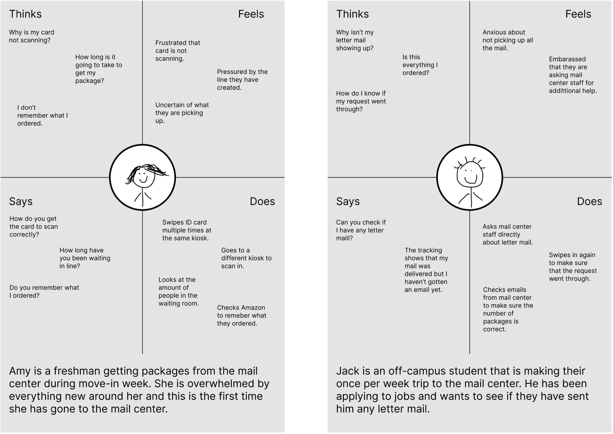
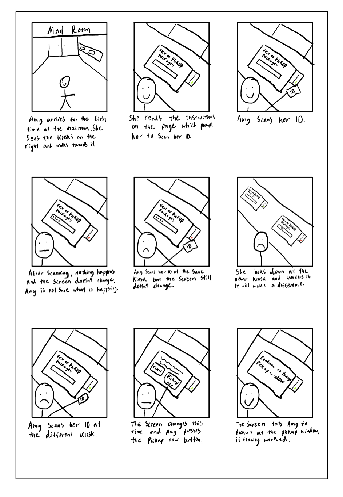

I wanted to explore an interface that students on campus use regularly and understand it better. I will do this by observing real users interacting with an interface, interview these individuals about their experiences, create personas based on these users, and illustrate a storyboard for one of my personas.The interface that I chose was the check-in kiosk outside the mail room that students use to pick up packages.
For the first part, I will observe and interview people while they're interacting with an interface - this method is called a contextual inquriy. To do this I have created a list of interview questions that can hopefully solicit users to talk mroe about the interface from their perspectives.
The questions I have prepared are:
What led you here today?
Do you ever have concerns or difficulties while using the
interface?
Do your needs ever change after interacting with the
interface?
How would you describe the process of checking into the
mailroom to your grandparents?
Does this interface satisfy your needs?
I have also created a sketch for my interface that shows its key components
The key components of the interface include an ID card scanner which is attached to a touchscreen that has an input bar. The interface allows students to check if they have packages using their ID card and to pick them up if they want. The interface also helps relay information to the MailRoom staff by telling them what packages they need to find.
I observed 3 people using the interface I chose and recorded my findings. I tried my best to make objective observations about their actions and not let my opinions influence what I recorded.
Observations: The users begin by finding their ID card and swiping it on the scanner before they touch the screen. Some users struggled to have their ID’s scanned correctly by the scanner and had to move to a different kiosk. After the ID is scanned the students see a screen that tells them what packages they have and they press the “Pickup Now” button on the screen. Most students go to the waiting room before they see the next screen which is a confirmation. All students seem familiar with the interface and only operate it for 5-10 seconds. Students whose ID didn’t scan on the first time seemed to know what the problem was and could troubleshoot themselves.
Next, I interview the users and recorded their responses. I summarize my findings by each question.
1. What led you here today?
All students had similar responses to question 1 which was to
come to the mailroom because they had mail. They didn’t specify how
they knew they had mail though.
2. Do you ever have concerns or difficulties while using the
interface?
Majority of the students reported that they typically didn’t
have trouble with using the interface. However, they proceed to say
that either themselves or others have had trouble operating the
scanner and making sure the system registered their ID. They also
mentioned that this problem causes inconvenience either for themselves
or others and can also increase wait times. One student mentioned that
sometimes they are concerned someone else might use their ID but
pointed out that when the screen moves on they feel safe.
3.Do your needs change after interacting with the interface?
Majority of students responded that their original goals do not change
even after using the interface. One student mentioned that sometimes
they have letter mail but it doesn’t show up so they have to ask the
staff members to retrieve it.
4.How would you describe the process of checking into the mailroom
to your grandparents?
The focus of students' response to this question was focused
around their ID card. One student said they would describe it as
swiping a credit card. After swiping students didn’t go into detail of
how to confirm picking up the packages but they do mention that
confirmation is required. One student also mentioned that they would
explain that everyone needs to wait for their name to be called.
5.Does this interface satisfy your needs?
Majority of students responded that the interface satisfied
their needs with the exception of one student who had to switch to a
different kiosk because their ID wasn’t being read.
For the third part I took the data that I collected from my observations
and interview to create 2 personas. They are based on overarching trends
that I observe amongst all the users I interviewed.

For the fourth part I created a storyboard for the persona "Amy" that I creatred. The storyboard reflects the user's journey from start to end. 